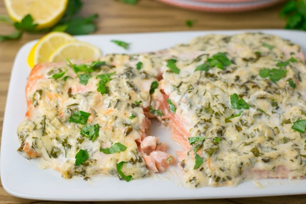

Baked Salmon

Description
Baked Salmon is a wonderfully high protein and vitamin rich food.
With a low fat/low calorie mayo being used we are able to keep
it as healthy as possible. One genuine sized 4-5oz serving of
salmon can give you the weekly omega vitamins you require.
Ingredients
- 3-4Tbsp of low calorie mayonnaise
- Seasoning of choice (incl. Salt and Pepper)
- Non-stick cooking spray
Steps
- Remove the skin if needed.
- Preheat oven to 450.
- Season the salmon all over.
- Place a nice layer of mayonnaise over the entire top of the salmon.
- Bake the Salmon for about 15-18mins.
- Once cooked fully place on broil for 5mins at 450 to finish off the mayonnaise.
- Let everything rest 10mins after cooking.
- ENJOY!
MENU